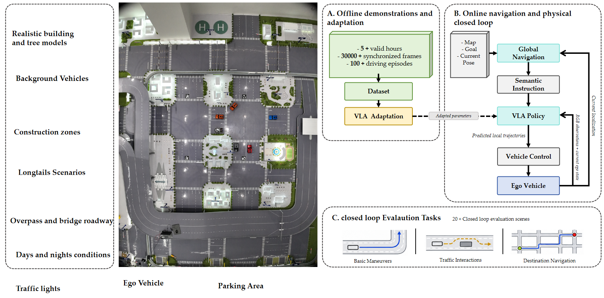
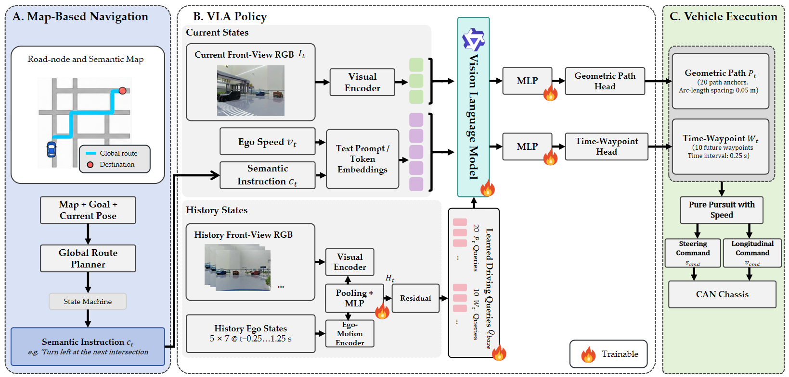

01 / PHYSICAL TESTBED
From a miniature city to repeatable experiments
The sandbox combines a realistic road layout, controllable background vehicles, localization, and an ego vehicle driven through a real-time control loop.

02 / POLICY
Grounded in visual context and navigation commands
The policy builds on SimLingo. The project adapts its driving interface to sandbox observations and semantic navigation, and adds temporal context for trajectory prediction. Predicted paths connect to the vehicle tracking controller.
- Current front-view image and causal ego speed
- Map-derived navigation instruction
- History-conditioned driving queries
- Geometric path and time-waypoint outputs

03 / EVALUATION
Open-loop prediction and physical closed-loop trials
Evaluation covers trajectory prediction and expert-reviewed physical trials across maneuvering, traffic interaction, and destination navigation. Metrics and trial definitions should match the paper exactly.
Results and the scenario-by-scenario video index will be linked here in the public release.
04 / EXPERIMENT VIDEOS
See the vehicle navigate
Watch the SandboxNav-VLA project demonstration below.
SandboxNav-VLA · Project demonstrationWatch on YouTube ↗
CODE & CITATION
Reproduce and build on the work
The repository includes a preliminary selection of source code and evaluation results. Reproduction instructions, configurations, and hardware interfaces are in preparation.
Open the code repository